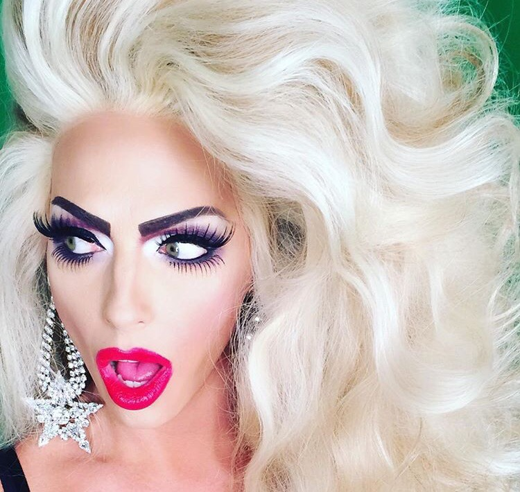
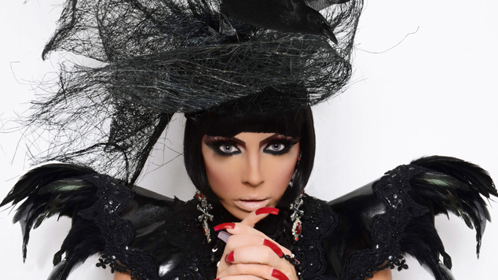

Foto por Jacques Dequeker

Book para a revista VOGUE
| LOCAL | EVENTO | DATA |
|---|---|---|
| Rio de Janeiro | Lisa Crazy - Festa Drag Queen | 21/10/2016 |
| São Paulo - Anheimbi | SPFW N42 – Semana de moda paulista | 24/10/2016 |
| Curitiba - Teatro Guaíra: Guairão - Auditório | Show Drag | 06/12/2016 |
Allysa é uma artisca completa! Eu ri do começo ao fim no seu stand up comedy.
MARAVILHOSA!! Recomendo!!!